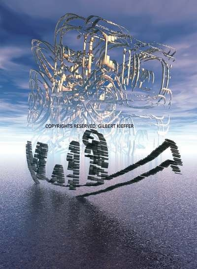
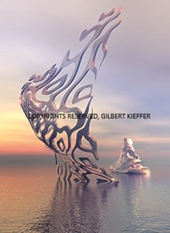
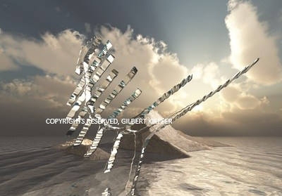
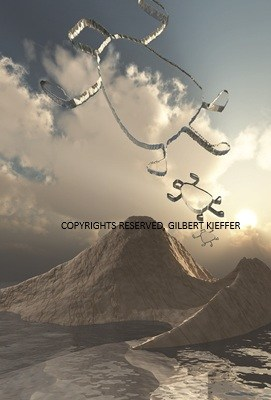
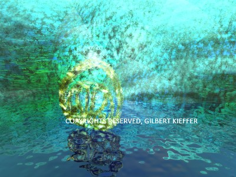
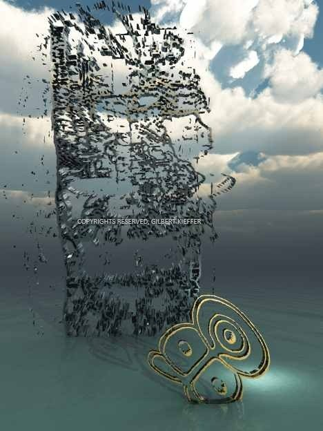

← Codices Art← Codices Art
Codices Art · Gilbert Kieffer
Colección TaínoTaíno Collection
7 obras de Gilbert Kieffer7 works by Gilbert Kieffer
Pictografías y deidades del Caribe. La canoa y la cohoba: los signos que acompañaban el viaje y el rito.
Pictographs and deities of the Caribbean. The canoe and the cohoba: the signs that went with the journey and the rite.






Una obra para tu espacioA work for your space
Cada obra se imprime en canvas a la medida del muro, firmada, con marco flotante e instalación. Formatos y disponibilidad a pedido.
Each work is printed on canvas to the size of the wall, signed, with a floating frame and installation. Formats and availability on request.
Solicitar una obraRequest a workOtras coleccionesOther collections
- Colección MayaMaya Collection
- Colección NazcaNazca Collection
- Ñandutí · prontoÑandutí · soon